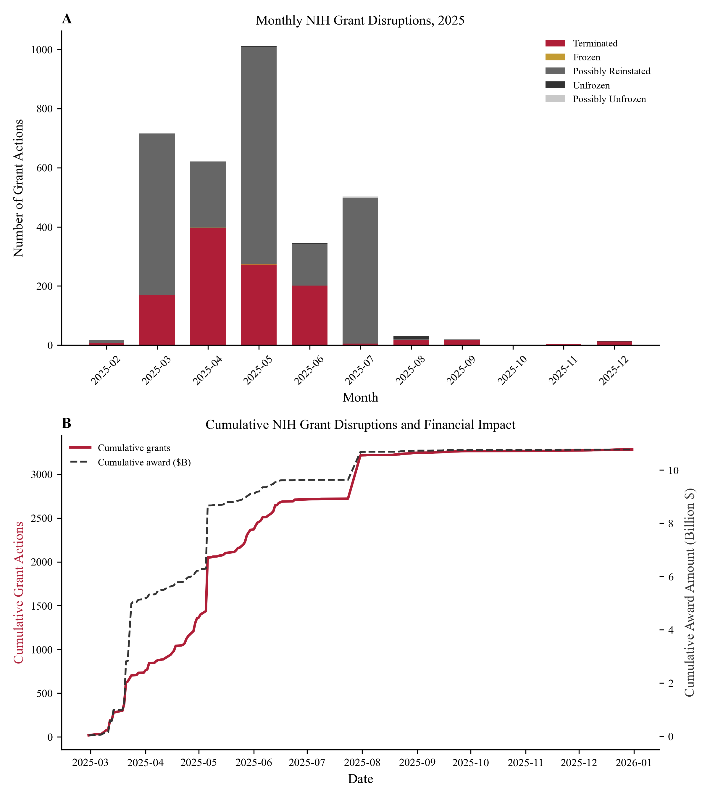
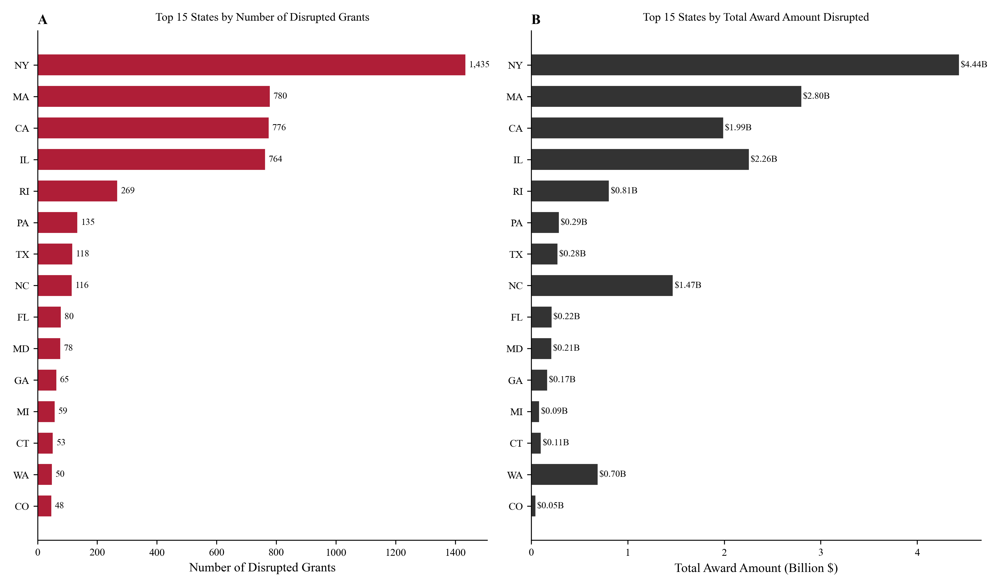
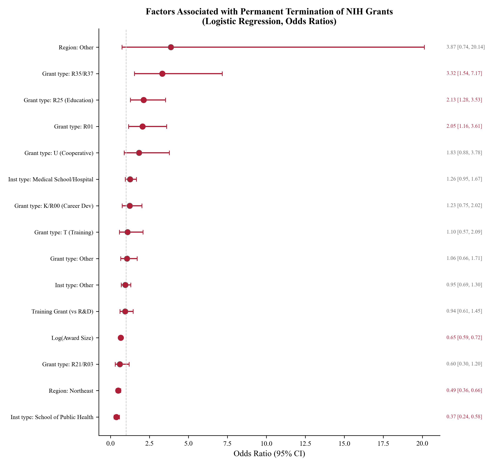
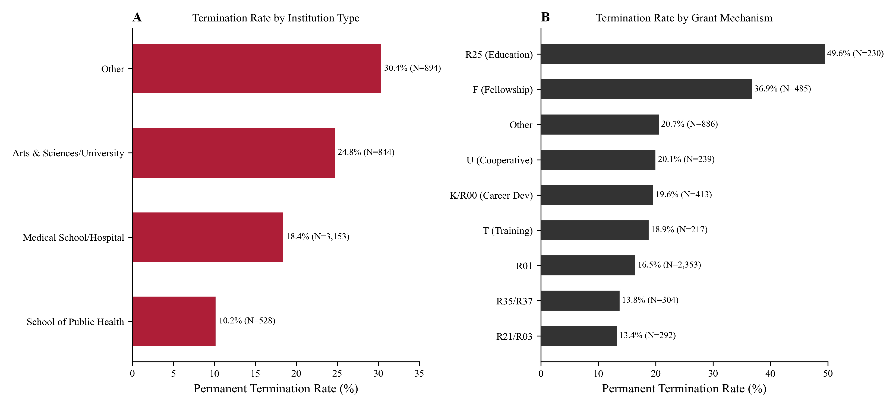

One AI prompt turns a public-health dataset into a JAMA-style paper — automatically, with zero manual writing.
Start the Tutorial ↓Every step must happen in sequence. One wrong step breaks everything downstream — and you have 90 minutes.
This workflow encodes all those decisions into a rule-driven multi-agent pipeline.
You type one prompt. The agent does the rest.
See how ↓Everything you need before typing the one prompt.
Run pip install -r workflow/requirements.txt from the project root. 9 packages total.
Place CSV / XLSX / MD files in exam_paper/data/. Include a Data_Description.md.
Or Claude Code with --dangerously-skip-permissions. Both work identically.
AGENTS.md is the orchestrator — it routes execution through 7 rule files and 2 pre-written scripts. You touch none of them.
workflow/ AGENTS.md <─ Master orchestrator (AI reads this first) rules/ 01-data-exploration.md <─ How to profile any dataset 02-research-question.md <─ JAMA-style question formulation 03-analysis-plan.md <─ Statistical method decision tree 04-visualization-style.md <─ JAMA figure styling spec 05-paper-writing.md <─ Section-by-section paper guide 06-references.md <─ BibTeX reference generation 07-quality-checklist.md <─ 40-point final review checklist scripts/ data_profiler.py <─ Generic data scanner ← pre-written compile_latex.sh <─ LaTeX compilation helper ← pre-written templates/ template.tex <─ JAMA Network Open LaTeX template references.bib <─ Placeholder bibliography
AGENTS.md first. That file tells it which rule to apply at each stage. The rules are the brain — you just provide the data.
Each stage runs sequentially and produces real, auditable output files you can inspect at any time.
The agent reads Data_Description.md, then runs data_profiler.py on every file — column names, data types, missing-value rates, date ranges, and cross-file merge keys — without you touching the data.
Based on the profile, the agent identifies exposure, outcome, population, and study design — then writes a formal JAMA-style objective a reviewer would accept.
The agent writes a complete analysis.py from scratch, executes it, and verifies all outputs. Four publication-quality figures are generated with JAMA styling.




The agent fills every section of the JAMA LaTeX template with exact numbers from the CSVs, then searches online for real papers and builds a 31-entry BibTeX bibliography.
A 40-point checklist verifies every number before compilation. After passing, pdflatex runs three passes automatically — no manual intervention.
These are not mock data. Every number below was produced by this exact workflow on the live exam dataset.
| Characteristic | All | Terminated | Reinstated |
|---|---|---|---|
| N | 5,419 | 1,116 | 4,303 |
| R&D funding | 67.9% | 16.2% | 83.6% |
| Training grants | 29.0% | 29.9% | 69.5% |
| R01 grants | 43.4% | 16.5% | 83.2% |
| R25 (Education) | 4.2% | 49.6% | 50.4% |
| School of Pub. Health | 9.7% | 10.2% | 89.8% |
| Northeast states | 50.0% | 10.9% | 89.0% |
| Mean total award | $3.18M | $1.57M | $3.61M |
| Total remaining | $7.15B | $0.49B | $6.63B |
Every file is plain text or a standard format. You can open and edit any of them at any time.
Structured markdown: 5,419 rows × 57 cols, date range 2024-11-08 → 2026-02-28, top activity codes, merge key appl_id.
Formal JAMA objective, exposure/outcome definitions, subgroup analysis plan, and statistical method choice (logistic regression with fixed effects).
Complete 731-line analysis script. All numeric outputs ready for citation in-text. Four JAMA-styled figures in PDF and PNG.
Full LaTeX paper with inline exact numbers, 31 real citations, complete BibTeX file. Discussion: 863 words across 6 paragraphs.
Compiled, JAMA-formatted PDF. 10 pages. 40/40 quality checks passed. Ready for submission.
exam_paper/data/ → sample/data/. If data is elsewhere, it silently fails.
exam_paper/data/ and a Data_Description.md is present at the same level.-88 or -99. Without explicit remapping, the script treats them as real numbers and the model fails.
-88 / -99 to NaN before re-running. If it still fails, check data_summary.md for flagged sentinel values..bst or .sty packages are the most common cause. Read the first error in paper.log, not the last.
tlmgr install <package_name> for whatever package is reported, then recompile with bash workflow/scripts/compile_latex.sh paper.tex.A 7–8 minute screen recording — from an empty data folder to a compiled JAMA-style PDF.